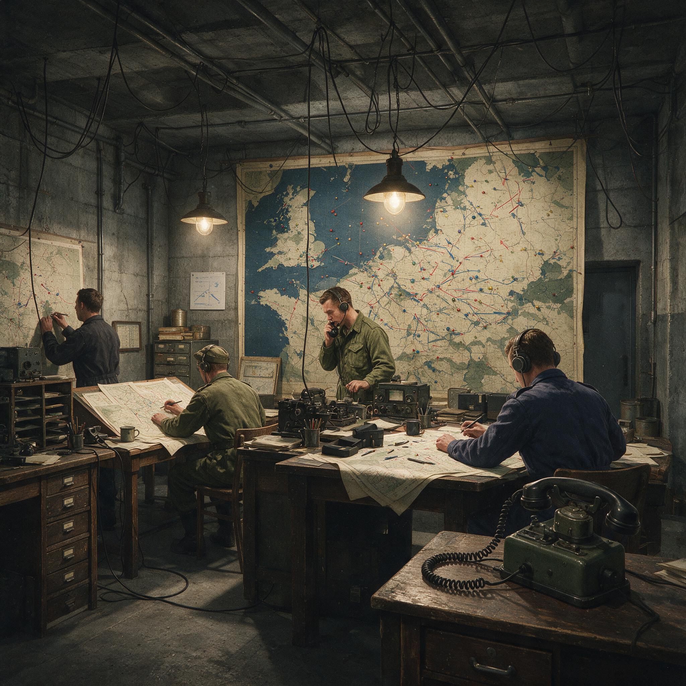

第 6 章
厘米波之门
1940年2月21日傍晚，伯明翰大学物理系的地下实验室里，约翰·兰德尔盯着示波器的荧光屏，手指还搭在调谐旋钮上。屏幕上的波形不是他预想中的样子。按照计算，这个新设计的磁控管应该在1

道丁系统地下指挥室场景示意
AI 生成插图，非史实影像。
0厘米波长附近产生振荡，但之前几周的测试里，输出功率始终徘徊在几瓦的量级——连点亮一个灯泡都勉强。亨利·布特站在他身后两步远的地方，手里捏着一截计算尺，指节因为用力而发白。两个人都没说话。
示波器上的脉冲波形稳定、清晰、幅度惊人。兰德尔后来在技术报告中写下了一个数字：在9.8厘米波长上，峰值功率接近一千瓦。
这个数字在此刻的1940年意味着什么？当时英国本土链雷达网最先进的米波发射机，在十几米波长上能打出的脉冲功率不过几十千瓦，而眼前这块烤面包机大小的铜块——它的共振腔是用伯明翰大学工坊的车床一刀一刀铣出来的——在十分之一波长上达到了同等的量级。
布特打破了沉默。他说的大意是：我们需要重新校准功率计。他们重新校准了。功率读数没有变化。
这就是厘米波之门被推开的瞬间。不是一声巨响，而是一道荧光屏上的绿色波形，在一个地下室里，被两个从伦敦大学学院逃难到伯明翰的物理学家亲眼看见。
要理解这一刻为什么决定了此后五年的电磁战争走向，得先从磁控管本身讲起。雷达的本质是向空中发射电磁波脉冲，然后接收目标反射的回波。波长越短，波束可以越窄，方向性越好，分辨目标的精度也越高。但这里有一个物理上的硬约束：产生高频电磁波需要电子在电磁场中以相应的频率振荡，而传统真空管的电极间距和电子渡越时间把可用频率锁死在了米波波段。
到1939年为止，英国、德国、美国各自独立发展的雷达系统全部困在这个物理极限里——德国弗雷亚雷达工作在2.4米波长，英国本土链工作在10到13米，美国海军的CXAM雷达在1.5米左右。再往下走，传统真空管的输出功率会断崖式下跌，跌到毫无实用价值。多腔磁控管的思路绕开了这个死结。
它的结构说起来并不复杂：一个实心铜圆柱体，中心有一根阴极灯丝，圆柱体周围均匀分布着若干个空腔——兰德尔和布特的原型做了六个腔。强磁场沿圆柱轴线施加，阴极发射的电子在电场和磁场的联合作用下不走直线，而是被拧成弯曲的轨迹，贴着共振腔的开口高速旋转。这个运动在物理上等价于一个高频振荡电流，频率由共振腔的尺寸决定。腔越小，频率越高。当电子云的旋转频率与共振腔的本征频率匹配时，系统产生谐振，电磁能量从腔体耦合输出——就像对着瓶口吹气，气流本身没有固定音高，但瓶腔选出了特定频率的声波。
兰德尔和布特的关键突破不在原理上。多腔磁控管的原理早在1920年代就有人提出过，1935年德国人汉斯·霍尔曼也申请过相关专利。
问题一直卡在工程上：共振腔的加工精度要求极高，六个腔的尺寸必须完全一致，否则能量会在不同模式间分散，输出功率上不去；阴极的电子发射密度必须足够大；磁场的均匀性必须足够好；输出耦合的方式必须足够高效。
伯明翰大学能解决这些工程问题，不是偶然的。1939年9月英国对德宣战后，空军部立即启动了一项紧急研究计划，把全国大学的物理学资源纳入战时科研体系。这个体系的枢纽是蒂泽德委员会——全称“防空科学研究委员会”，由帝国理工学院的亨利·蒂泽德爵士主持。委员会在1939年秋天做了一个关键决策：不再把雷达研究全部集中在军方自己的机构里，而是把基础物理问题拆解成若干个课题，分包给各大学的物理系。伯明翰大学物理系拿到了产生高频电磁波的任务，系主任马克·奥利芬特负责协调。
奥利芬特本人的背景值得一提。他是澳大利亚人，在剑桥卡文迪许实验室跟卢瑟福做过核物理研究，1937年转到伯明翰组建物理系。他带来的不只是核物理的技术积累——高真空、高电压、精密加工——还有一种卡文迪许实验室特有的作风：物理学家应该亲手造设备。兰德尔和布特都是他的下属。
兰德尔原来做固体物理，布特做热离子学，两个人被奥利芬特拉到一起时对微波技术都不算内行。
但奥利芬特看重的不是他们的既有专长，而是他们解决问题的能力。1940年1月，奥利芬特给了他们一个明确的目标：搞出一个能在10厘米波长上产生足够功率的微波源。他没有规定技术路线，只给了实验室、预算和截止日期——战争期间没有“无限期研究”这回事。
兰德尔和布特在一个月内完成了原型设计。他们用了六腔结构，因为理论计算表明六腔能在所需频率上提供最高的效率。铜块从实心铜柱上车削出来，共振腔用铣刀一个一个掏空。腔的内壁抛光到镜面程度——任何粗糙都会增加高频电流的电阻损耗。阴极为氧化钡涂层灯丝，能提供每平方厘米数安培的发射电流密度。磁铁是从一台旧回旋加速器上拆下来的电磁铁，磁场强度约0.1特斯拉。
2月21日的测试是这套装置的第一次全功率运行。当高压电源接通、磁铁励磁、阴极加热到工作温度时，能量从六个共振腔耦合出来，通过一根同轴探针引出到波导——然后打到示波器上。波形稳定在9.8厘米处。峰值功率读数让在场的人重新校准了仪器。
消息传到伦敦的速度很快。奥利芬特在几天内向蒂泽德委员会报告了结果。委员会的反应不是祝贺——或者说不仅仅是祝贺——而是立刻启动了两条并行的行动链。
第一条链是保密升级。多腔磁控管被列为最高密级——“绝密”之上再加特殊管制。伯明翰实验室的出入受到限制，所有参与人员被要求签署额外的保密协议。这个动作本身说明军方意识到了磁控管的战略分量：它不只是现有雷达技术的改进版，而是一个全新的能力维度。
第二条链是工程化评估。蒂泽德委员会指定了通用电气公司的研究所——位于温布利的GEC研究实验室——作为磁控管从实验室原型走向可生产型号的工程化接口。GEC的工程师在3月拿到了伯明翰的原型和相关图纸，开始做三件事：测试可重复性、改进制造工艺、设计适合量产的版本。
这里出现了一个典型的“制度压力时刻”。GEC的工程师发现，伯明翰原型的性能高度依赖手工调试——共振腔的精确尺寸、阴极的对中精度、输出耦合的位置都需要经验判断。
这在实验室里不是问题，但在生产线上是灾难。GEC提出了一个折中方案：把磁控管的共振腔体从整体车削改为分体加工再组装，用精密夹具保证一致性；同时把磁路设计标准化，不再依赖从旧设备上拆下来的非标磁铁。这些改动在和平时期需要六个月到一年的测试周期。
1940年3月到4月间，不列颠空战的序幕已经拉开——德国空军开始对英吉利海峡的船运和英国南部港口进行试探性攻击。空军部给了GEC一个实际上不可能的时间表：夏末之前必须拿出可用的厘米波机载雷达原型。
这个时间压力反过来塑造了技术决策。GEC的工程师放弃了追求最优性能的思路，转而追求“足够好且能快速复制”的方案。他们选定的第一代量产型磁控管输出功率比伯明翰原型略低——大约在500瓦级别——但可以在普通工厂条件下批量生产。这个妥协是典型的战时工程逻辑：十个500瓦的可用设备比一个1000瓦的实验室孤品有价值得多。
第三条链也在运转：飞机和舰船的改装准备。厘米波雷达的核心优势是天线尺寸的急剧缩小。
米波雷达的天线阵列动辄几十米宽——本土链的铁塔就是明证——飞机根本装不下。但10厘米波长的电磁波可以用直径不到一米的抛物面天线形成窄波束。这意味着雷达可以装进飞机的鼻锥、机翼吊舱或者舰船的桅杆顶部。
1940年春天，皇家空军的海岸司令部已经开始改装几架惠灵顿轰炸机，在机腹安装了一个流线型的天线罩，内部预留了厘米波雷达的安装空间——尽管当时还没有可用的雷达来填这个空洞。
这个细节透露出一个更深层的制度特征：英国的防空研发体系不是串行的——不是等上游技术成熟后再启动下游应用——而是并行的。实验室还在调试原型机时，飞机改装已经在推进；磁控管还没离开伯明翰地下室时，天线设计已经在法恩伯勒的皇家航空研究院展开；GEC还没解决量产工艺时，作战需求文件已经写好了。
这种并行推进的风险显而易见：如果磁控管最终搞不出来，所有下游投入全部打水漂。但蒂泽德委员会愿意承受这个风险，因为战争的时间账本和和平时期完全不同——延误的成本可能比浪费更高。
1940年5月到6月间，法国战役以灾难性的速度推进。德国装甲师在六周内碾过了法国北部，英国远征军从敦刻尔克撤回本土。6月22日法国投降。英国现在独自面对一个控制了从挪威到西班牙整个欧洲西海岸线的德国。不列颠空战在7月正式打响。
在这个背景下看磁控管的研发进度表会更有感觉：1940年7月，GEC交付了第一批可用的量产型磁控管；8月，第一台厘米波机载雷达原型——后来被称为ASV Mk II（空对海搜索雷达Mark II）——安装在一架惠灵顿轰炸机上进行了地面测试；9月初进行了首次飞行测试。
飞行测试的结果超出了预期。在1500英尺高度上，雷达成功探测到了十几英里外的水面舰船目标——包括一艘在水面航行的潜艇。
对比一下当时的米波机载雷达：波长1.5米左右的ASV Mk I也能发现水面舰船，但最小探测距离受限于脉冲宽度和天线波束宽度，对近距离的小目标——比如潜艇指挥塔——几乎无能为力。厘米波雷达的窄波束和高分辨率改变了这个局面。
但此刻是1940年9月。不列颠空战正在英格兰南部上空达到最激烈的阶段。德国空军的昼间大规模空袭受挫于道丁系统后，开始转向夜间轰炸伦敦和其他工业城市。皇家空军的夜间拦截能力极其有限——机载雷达还处于米波阶段，天线笨重、探测距离短、最小距离大、地杂波干扰严重。飞行员们在夜空中基本靠肉眼搜索目标。
空军部对厘米波雷达的需求因此变得更加急迫：不只要用于反潜巡逻的海岸司令部飞机，也要用于夜间战斗机的空对空拦截。
这就撞上了一堵墙：英国的工业产能已经接近极限。1940年秋天的英国处于一种全面紧绷的状态。飞机制造厂在全力补充不列颠空战中损失的战斗机；造船厂在抢修被德国潜艇打伤的商船；弹药厂三班倒生产高射炮弹；雷达工厂已经在加班加点地生产本土链和低空覆盖链的米波设备。把一种全新的、需要精密加工和特殊材料的厘米波雷达投入大规模生产，意味着要从已经紧绷到极限的产业链中再抽出一块资源。
蒂泽德和他的同事们算了一笔账：按照最乐观的估计，英国本土工业能在1941年底前量产厘米波雷达的装机数量不会超过几百台——而仅海岸司令部的反潜巡逻机就需要这个数量的好几倍。夜间战斗机的需求同样巨大。
这笔账指向了一个不可回避的结论：英国无法独自完成厘米波雷达的工业化量产。这不是技术问题。伯明翰实验室和GEC已经证明了磁控管可以量产。这是工业体量问题：英国没有美国那样的汽车工业级大规模精密制造能力、没有那么多闲置的电子管生产线、没有那么多能快速转产的无线电工厂。
1940年8月底或9月初——确切日期在不同回忆录中有出入——蒂泽德向丘吉尔提交了一份建议：派遣一个科学代表团前往美国，把英国在过去一年里积累的关键军事技术全部交给美国人，换取美国的工业产能和研发合作。这份建议的政治敏感性怎么强调都不为过。当时美国还没有参战——《租借法案》要到1941年3月才签署——向一个中立国移交最敏感的军事技术，在法律上和政治上都充满风险。
而且清单上的技术远不止磁控管一项：还包括喷气发动机、近炸引信、原子能研究的基础数据（后来的“莫德报告”前身）以及其他几项绝密项目。丘吉尔批准了这个建议。他的判断逻辑在事后看并不难理解：如果英国在美国参战前被打败——1940年秋天的入侵威胁是真实的——这些技术会随同英国的崩溃一起落入德国手中；但如果把它们交给美国并换来实质性的工业支持，英国就多了一根撑下去的支柱。
1940年9月底，亨利·蒂泽德亲自率领一个六人科学代表团登上了一艘开往美国的轮船。代表团成员包括雷达专家、核物理学家和航空工程师。
他们的行李中有一只黑色的金属箱子——没有武装护卫随行，就放在蒂泽德的船舱里。箱子里装的是编号第12号的多腔磁控管原型机。这不是伯明翰地下室里的那台第一号原型——那台留在了英国继续测试和改进——而是GEC制造的经过工程优化的版本。
外观上它就是一个铜质圆柱体，大小和形状确实让人联想到烤面包机：直径约十厘米出头，长度略短于直径，顶部伸出一根同轴输出探针，侧面有冷却鳍片。共振腔藏在铜壳内部，肉眼看不见。如果拿在手里翻看——当时确实有美国人这么做了——能感受到它的分量：实心铜块加上磁铁组件，沉甸甸的。就是这块铜疙瘩，将在接下来的几个月里引爆美国科研体系的一场链式反应。
但在讲述跨大西洋的故事之前——那是下一章的内容——需要先停下来问一个问题：为什么是英国先突破了多腔磁控管？这个问题之所以重要，是因为它直接触及本书的核心论断：技术×制度。
德国人在磁控管研究上起步并不晚。1935年汉斯·霍尔曼就申请了多腔磁控管的德国专利。1938年到1939年间，柏林的通用电气公司和德律风根公司都在做磁控管的实验研究。德国人掌握的理论基础和工艺能力丝毫不逊于英国同行——在某些方面甚至更强：德国在精密机械加工和真空管制造上的工业水平是世界顶尖的。
但德国没有在1940年拿出可用的厘米波磁控管。原因不在物理学层面。原因在制度层面。德国空军的雷达研发体系是分散化的：空军通信处管一块、空军武器测试中心管一块、各家公司各自为战、大学物理系基本被排斥在核心军事研究之外——希特勒在1936年下令禁止大学参与机密军事项目。不同机构之间的信息流通受到严格的保密壁垒限制：不是防敌人，是防自己人。
当霍尔曼1935年提出多腔磁控管的概念时，他的专利被归类为“一般无线电技术”，没有引起军方的高度重视——因为军方的技术评估体系没有机制去识别一项基础物理突破的战略潜力。当通用电气和德律风根在1938-1939年做实验时，他们各自为各自的军种客户服务——空军和海军的需求互相隔离、技术参数互相保密、研发资源互相竞争而没有协调机制。更要命的是德国防空体制的顶层逻辑：德国空军在1930年代的快速扩张中形成了一种文化——相信现有装备的技术优势足以碾压任何对手。
1939年到1940年初期的战争经验似乎验证了这个信念：波兰、挪威、法国相继溃败，英国远征军被赶出欧洲大陆。在这种氛围下，“我们需要更先进的雷达”不是一个能获得资源优先级的诉求——现有的弗雷亚和维尔茨堡雷达看起来够用了。直到不列颠空战受挫之后，德国人才开始认真反思自己的雷达技术路线。
但那时已经是1940年秋天——伯明翰的磁控管已经在示波器上显示了它的波形，蒂泽德的箱子已经在横渡大西洋的路上。英国的制度优势体现在三个具体的安排上。第一是蒂泽德委员会本身的结构：它不是一个官僚咨询机构，而是一个有决策权和预算权的执行机构。
委员会成员以科学家为主，不是军人或公务员，他们对技术路线的判断可以直接转化为拨款指令，不需要经过层层行政报批。第二是大学-工业-军方的三角协作机制：蒂泽德委员会把基础研究任务分包给大学物理系，把工程化任务指定给特定的工业企业，同时让军方用户提前介入需求定义和平台改装。
三条线并行推进，信息在委员会层面汇总和协调，而不是各自为政地跑审批流程。第三是对保密制度的务实态度：英国当然也对磁控管采取了严格的保密措施，但没有让保密成为阻碍协作的壁垒。伯明翰大学、GEC研究所、皇家航空研究院、海岸司令部之间的信息流通是通畅的——因为所有参与方都被纳入了同一个保密体系，而不是各自建立互相隔离的保密区。
这三条制度安排加在一起，产生了一个具体的时间差：从兰德尔和布特在地下室里看到那道绿色波形，到第一台可用的量产型磁控管交付测试，中间只隔了不到六个月；到蒂泽德携带磁控管启程赴美，只隔了七个月。德国人从确认厘米波雷达的战略必要性到拿出可用原型所花的时间，将会是这个数字的好几倍——而且是在战争压力更大、资源更紧张的后期阶段。这就是制度的速度。回到1940年9月底的大西洋航线上。蒂泽德乘坐的轮船采取规避德国潜艇的之字形航线，航程比平时更长。
船舱里那个黑色金属箱子旁边，代表团成员们在反复推敲到达美国后的谈判策略：如何说服美国军方和科研机构认真对待这些来自一个濒临崩溃边缘的岛国的技术？如何确保技术移交不会在官僚程序中陷入停滞？如何争取最大限度的美国工业产能投入？这些问题没有现成答案。
但有一件事是确定的：厘米波之门已经打开，门后的世界需要更大的力量才能走进去。英国用自己的制度完成了从物理原理到可用原型的跃迁，但接下来的工程化量产超出了这个岛国的工业体量极限。蒂泽德代表团此行是在赌一件事：美国人能接住这块铜疙瘩，并且用他们的工业机器把它变成成千上万台能装进飞机鼻锥和舰船桅杆的厘米波雷达。
如果赌赢了，大西洋之战的潜艇猎杀和欧洲上空的战略轰炸将获得一双新的眼睛。如果赌输了，伯明翰地下室里那道绿色波形就只是一篇漂亮的物理学论文，而不是一种改变战争形态的武器。轮船继续向西航行，在北大西洋的秋浪中颠簸起伏。
亨利·蒂泽德很可能站在甲板上，看着灰蒙蒙的海天线，手里捏着烟斗，在计算剩下的航程——以及剩下的时间。不列颠空战正在英格兰上空进入最后阶段，德国潜艇在大西洋上的猎杀效率正在攀升到顶峰，而皇家空军夜间拦截机的飞行员们还在夜空中用肉眼搜索目标。时间是1940年秋天，战争的天平还在摇摆，而厘米波之门后面的世界，正等待跨过大洋的美国工业力量来将它真正打开。